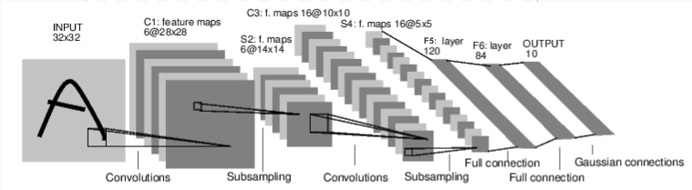

备注
点击 这里
下载完整示例代码
介绍 ||
张量 ||
自动微分 ||
构建模型 ||
TensorBoard 支持 ||
训练模型 ||
模型理解
PyTorch 简介 ¶
创建时间：2025年4月1日 | 最后更新时间：2025年4月1日 | 最后验证时间：2024年11月5日
按照下面的视频操作或访问 YouTube。
PyTorch 张量 ¶
请从视频的 03:50 开始跟随。
首先，我们将导入 PyTorch。
import torch
让我们看看一些基本的张量操作。首先，创建张量的几种方法：
z = torch.zeros(5, 3)
print(z)
print(z.dtype)
如上所示，我们创建了一个填充零的 5x3 矩阵，并查询其数据类型，发现这些零是 32 位浮点数，这是 PyTorch 的默认值。
如果你想使用整数呢？你总是可以覆盖默认值：
i = torch.ones((5, 3), dtype=torch.int16)
print(i)
你可以看到，当我们更改默认值时，当打印张量时，它会友好地报告这一点。
通常我们会随机初始化学习权重，通常使用特定的种子来初始化 PRNG 以实现结果的重复性：
torch.manual_seed(1729)
r1 = torch.rand(2, 2)
print('A random tensor:')
print(r1)
r2 = torch.rand(2, 2)
print('\nA different random tensor:')
print(r2) # new values
torch.manual_seed(1729)
r3 = torch.rand(2, 2)
print('\nShould match r1:')
print(r3) # repeats values of r1 because of re-seed
PyTorch 张量执行算术运算直观。形状相似的张量可以进行加法、乘法等操作。标量运算会分布到张量上：
ones = torch.ones(2, 3)
print(ones)
twos = torch.ones(2, 3) * 2 # every element is multiplied by 2
print(twos)
threes = ones + twos # addition allowed because shapes are similar
print(threes) # tensors are added element-wise
print(threes.shape) # this has the same dimensions as input tensors
r1 = torch.rand(2, 3)
r2 = torch.rand(3, 2)
# uncomment this line to get a runtime error
# r3 = r1 + r2
下面是一些可用的数学运算的示例：
r = (torch.rand(2, 2) - 0.5) * 2 # values between -1 and 1
print('A random matrix, r:')
print(r)
# Common mathematical operations are supported:
print('\nAbsolute value of r:')
print(torch.abs(r))
# ...as are trigonometric functions:
print('\nInverse sine of r:')
print(torch.asin(r))
# ...and linear algebra operations like determinant and singular value decomposition
print('\nDeterminant of r:')
print(torch.det(r))
print('\nSingular value decomposition of r:')
print(torch.svd(r))
# ...and statistical and aggregate operations:
print('\nAverage and standard deviation of r:')
print(torch.std_mean(r))
print('\nMaximum value of r:')
print(torch.max(r))
关于 PyTorch 张量的强大功能还有很多要了解，包括如何为 GPU 上的并行计算设置它们 - 我们将在另一段视频中深入探讨。
PyTorch 模型 ¶
从视频的 10:00 开始跟随。
让我们谈谈如何在 PyTorch 中表达模型
import torch # for all things PyTorch
import torch.nn as nn # for torch.nn.Module, the parent object for PyTorch models
import torch.nn.functional as F # for the activation function

图：LeNet-5
上面是 LeNet-5 的示意图，这是最早的卷积神经网络之一，也是深度学习爆炸式发展的推动者之一。它被构建来读取手写数字的小图像（MNIST 数据集），并正确分类图像中代表的数字。
下面是它的简化版工作原理：
层 C1 是一个卷积层，意味着它扫描输入图像以寻找它在训练期间学习的特征。它输出一个映射，显示它在图像中看到了每个学习的特征的位置。这个“激活图”在层 S2 中被下采样。
层 C3 是另一个卷积层，这次它扫描 C1 的激活图以寻找特征组合 。它还输出一个描述这些特征组合空间位置的激活图，该激活图在层 S4 中被下采样。
最后，末尾的全连接层 F5、F6 和 OUTPUT 是一个分类器 ，它接受最终的激活图，并将其分类到代表 10 个数字的 10 个分类中。
我们如何用代码表达这个简单的神经网络？
class LeNet(nn.Module):
def __init__(self):
super(LeNet, self).__init__()
# 1 input image channel (black & white), 6 output channels, 5x5 square convolution
# kernel
self.conv1 = nn.Conv2d(1, 6, 5)
self.conv2 = nn.Conv2d(6, 16, 5)
# an affine operation: y = Wx + b
self.fc1 = nn.Linear(16 * 5 * 5, 120) # 5*5 from image dimension
self.fc2 = nn.Linear(120, 84)
self.fc3 = nn.Linear(84, 10)
def forward(self, x):
# Max pooling over a (2, 2) window
x = F.max_pool2d(F.relu(self.conv1(x)), (2, 2))
# If the size is a square you can only specify a single number
x = F.max_pool2d(F.relu(self.conv2(x)), 2)
x = x.view(-1, self.num_flat_features(x))
x = F.relu(self.fc1(x))
x = F.relu(self.fc2(x))
x = self.fc3(x)
return x
def num_flat_features(self, x):
size = x.size()[1:] # all dimensions except the batch dimension
num_features = 1
for s in size:
num_features *= s
return num_features
查看这段代码，你应该能够发现与上面图表的一些结构相似之处。
这展示了典型 PyTorch 模型的结构：
它继承自torch.nn.Module- 模块可以嵌套 - 事实上，甚至Conv2d和Linear层类也继承自torch.nn.Module。模型将有一个
__init__()函数，其中它实例化其层，并加载可能需要的任何数据工件（例如，一个 NLP 模型可能会加载一个词汇表）。模型将有一个
forward()函数。这是实际计算发生的地方：将输入传递通过网络层和各种函数以生成输出。除了这些，你还可以像任何其他 Python 类一样构建你的模型类，添加任何你需要的属性和方法来支持你的模型计算。
让我们实例化这个对象，并通过它运行一个示例输入。
net = LeNet()
print(net) # what does the object tell us about itself?
input = torch.rand(1, 1, 32, 32) # stand-in for a 32x32 black & white image
print('\nImage batch shape:')
print(input.shape)
output = net(input) # we don't call forward() directly
print('\nRaw output:')
print(output)
print(output.shape)
上面发生了一些重要的事情：
首先，我们实例化了 LeNet 类，并打印了 net
对象。一个 torch.nn.Module 的子类将报告它创建的层及其形状和参数。如果您想了解模型处理的要点，这将提供一个方便的概述。
在下面，我们创建一个代表 32x32 图像且具有 1 个颜色通道的虚拟输入。通常，您会加载图像块并将其转换为这种形状的张量。
您可能已经注意到我们的张量中有一个额外的维度—— 批次
批次 维度。PyTorch 模型假设它们正在处理数据的 batches。
例如，我们的一批16个图像瓦片将具有形状
(16, 1, 32, 32)。由于我们只使用一张图像，因此创建了一个形状为 (1, 1, 32, 32) 的 1 个批次的批次。
我们通过像调用函数一样调用模型来请求推理：
net(input)。此调用的输出表示模型对输入表示特定数字的置信度。（由于这个模型还没有学习到任何东西，我们不应该期望在输出中看到任何信号。）查看 output 的形状，我们可以看到它也具有一个批处理维度，其大小应始终与输入批处理维度匹配。如果我们传递了一个包含 16 个实例的输入批次，output 的形状将为 (16, 10)。
数据集和数据加载器 ¶
从视频的 14:00 开始跟随。
下面，我们将演示如何使用 TorchVision 中提供的可下载的开放访问数据集之一，如何将图像转换为模型可消费的格式，以及如何使用数据加载器将数据批次喂给模型。
我们首先需要将传入的图像转换为 PyTorch 张量。
#%matplotlib inline
import torch
import torchvision
import torchvision.transforms as transforms
transform = transforms.Compose(
[transforms.ToTensor(),
transforms.Normalize((0.4914, 0.4822, 0.4465), (0.2470, 0.2435, 0.2616))])
在这里，我们为输入指定两个转换：
transforms.ToTensor()将 Pillow 加载的图像转换为 PyTorch 张量。transforms.Normalize()调整张量的值，使其平均值为零，标准差为 1.0。大多数激活函数在 x = 0 处具有最强的梯度，因此将我们的数据集中在这一点上可以加快学习速度。传递给转换的值是数据集中图像 rgb 值的平均值（第一个元组）和标准差（第二个元组）。您可以通过运行以下几行代码自行计算这些值：- ```
从 torch.utils.data 导入 ConcatDataset，transform = transforms.Compose([transforms.ToTensor()]) trainset = torchvision.datasets.CIFAR10(root=’./data’, train=True,
download=True, transform=transform)
#将所有训练图像堆叠成一个形状为(50000, 3, 32, 32)的张量 x = torch.stack([sample[0] for sample in ConcatDataset([trainset])])
#获取每个通道的平均值 mean = torch.mean(x, dim=(0,2,3)) #tensor([0.4914, 0.4822, 0.4465]) std = torch.std(x, dim=(0,2,3)) #tensor([0.2470, 0.2435, 0.2616])
可用的变换还有很多，包括裁剪、居中、旋转和反射。
接下来，我们将创建一个 CIFAR10 数据集的实例。这是一个包含 10 类物体（6 类动物：鸟、猫、鹿、狗、青蛙、马和 4 类车辆：飞机、汽车、船、卡车）的 32x32 彩色图像瓦片的集合：
trainset = torchvision.datasets.CIFAR10(root='./data', train=True,
download=True, transform=transform)
备注
当您运行上面的单元格时，数据集的下载可能需要一点时间。
这是在 PyTorch 中创建数据集对象的示例。可下载
数据集（如上面的 CIFAR-10）是
torch.utils.data.Dataset 的子类。PyTorch 中的 Dataset 类包括 TorchVision、Torchtext 和 TorchAudio 中的可下载数据集，以及如 torchvision.datasets.ImageFolder 这样的实用数据集类，它可以读取标签图像的文件夹。您还可以创建自己的 Dataset 子类。
当我们实例化我们的数据集时，我们需要告诉它一些信息：
我们希望数据存放的文件系统路径。
我们是否使用这个集合进行训练；大多数数据集将被分为训练集和测试集。
如果我们还没有下载数据集，是否想要下载。
我们希望应用到的数据转换。
当您的数据集准备就绪后，您可以将其交给 数据加载器 ：
trainloader = torch.utils.data.DataLoader(trainset, batch_size=4,
shuffle=True, num_workers=2)
一个 数据集 子类封装了对数据的访问，并且针对其提供的数据类型进行了专门化。该 数据加载器 对数据一无所知，但它将 数据集 提供的输入张量组织成您指定的批次。
在上面的示例中，我们要求一个 数据加载器 给我们来自 trainset 的 4 张图像的批次，随机化它们的顺序（shuffle=True），并告诉它启动两个工作线程从磁盘加载数据。
观察您的 数据加载器 提供的批次是一个好习惯：
import matplotlib.pyplot as plt
import numpy as np
classes = ('plane', 'car', 'bird', 'cat',
'deer', 'dog', 'frog', 'horse', 'ship', 'truck')
def imshow(img):
img = img / 2 + 0.5 # unnormalize
npimg = img.numpy()
plt.imshow(np.transpose(npimg, (1, 2, 0)))
# get some random training images
dataiter = iter(trainloader)
images, labels = next(dataiter)
# show images
imshow(torchvision.utils.make_grid(images))
# print labels
print(' '.join('%5s' % classes[labels[j]] for j in range(4)))
运行上面的单元格应该会显示四张图片的条带，以及每个的正确标签。
训练您的 PyTorch 模型 ¶
从视频的 17:10 开始跟随。
让我们把所有部件放在一起，并训练一个模型：
#%matplotlib inline
import torch
import torch.nn as nn
import torch.nn.functional as F
import torch.optim as optim
import torchvision
import torchvision.transforms as transforms
import matplotlib
import matplotlib.pyplot as plt
import numpy as np
首先，我们需要训练和测试数据集。如果您还没有这样做，请运行下面的单元格以确保数据集已下载。（这可能需要一分钟。）
transform = transforms.Compose(
[transforms.ToTensor(),
transforms.Normalize((0.5, 0.5, 0.5), (0.5, 0.5, 0.5))])
trainset = torchvision.datasets.CIFAR10(root='./data', train=True,
download=True, transform=transform)
trainloader = torch.utils.data.DataLoader(trainset, batch_size=4,
shuffle=True, num_workers=2)
testset = torchvision.datasets.CIFAR10(root='./data', train=False,
download=True, transform=transform)
testloader = torch.utils.data.DataLoader(testset, batch_size=4,
shuffle=False, num_workers=2)
classes = ('plane', 'car', 'bird', 'cat',
'deer', 'dog', 'frog', 'horse', 'ship', 'truck')
我们将对来自 DataLoader 的输出进行检查：
import matplotlib.pyplot as plt
import numpy as np
# functions to show an image
def imshow(img):
img = img / 2 + 0.5 # unnormalize
npimg = img.numpy()
plt.imshow(np.transpose(npimg, (1, 2, 0)))
# get some random training images
dataiter = iter(trainloader)
images, labels = next(dataiter)
# show images
imshow(torchvision.utils.make_grid(images))
# print labels
print(' '.join('%5s' % classes[labels[j]] for j in range(4)))
这是我们将要训练的模型。如果您觉得它很熟悉，那是因为它是 LeNet 的一个变体——在本视频中之前讨论过——适用于三色图像。
class Net(nn.Module):
def __init__(self):
super(Net, self).__init__()
self.conv1 = nn.Conv2d(3, 6, 5)
self.pool = nn.MaxPool2d(2, 2)
self.conv2 = nn.Conv2d(6, 16, 5)
self.fc1 = nn.Linear(16 * 5 * 5, 120)
self.fc2 = nn.Linear(120, 84)
self.fc3 = nn.Linear(84, 10)
def forward(self, x):
x = self.pool(F.relu(self.conv1(x)))
x = self.pool(F.relu(self.conv2(x)))
x = x.view(-1, 16 * 5 * 5)
x = F.relu(self.fc1(x))
x = F.relu(self.fc2(x))
x = self.fc3(x)
return x
net = Net()
我们还需要最后的两个元素：损失函数和优化器：
criterion = nn.CrossEntropyLoss()
optimizer = optim.SGD(net.parameters(), lr=0.001, momentum=0.9)
如前所述，本视频中讨论的损失函数是衡量模型预测与理想输出之间距离的指标。交叉熵损失是像我们这样的分类模型的典型损失函数。
优化器是驱动学习的关键。在这里，我们创建了一个实现随机梯度下降的优化器，这是一种较为直接的优化算法。除了算法的参数，如学习率（lr）和动量，我们还传递了
net.parameters()，这是模型中所有学习权重的集合——这是优化器调整的内容。
最后，所有这些都被组装到训练循环中。请运行这个单元格，因为它可能需要几分钟才能执行：
for epoch in range(2): # loop over the dataset multiple times
running_loss = 0.0
for i, data in enumerate(trainloader, 0):
# get the inputs
inputs, labels = data
# zero the parameter gradients
optimizer.zero_grad()
# forward + backward + optimize
outputs = net(inputs)
loss = criterion(outputs, labels)
loss.backward()
optimizer.step()
# print statistics
running_loss += loss.item()
if i % 2000 == 1999: # print every 2000 mini-batches
print('[%d, %5d] loss: %.3f' %
(epoch + 1, i + 1, running_loss / 2000))
running_loss = 0.0
print('Finished Training')
这里我们只进行 2 个训练周期 （行 1）——也就是说两个
遍历训练数据集。每次遍历都有一个内部循环，
遍历训练数据 （行 4），提供转换后的输入图像及其正确标签的批次。
重置梯度 （行 9）是一个重要的步骤。梯度是在一个批次中累积的；如果我们不对每个批次重置它们，它们会继续累积，这将提供错误的梯度值，使得学习变得不可能。
在第12行，我们请求模型对这个批次进行预测。
在下一行（第13行），我们计算损失——预测输出（模型预测）和标签（正确输出）之间的差异。
输出 （模型预测）和标签 （正确输出）。
在第 14 行，我们进行反向传播 ，并计算将指导学习的梯度。
在第 15 行，优化器执行一次学习步骤 - 它使用来自 backward() 调用的梯度来推动学习权重向它认为可以减少损失的方向移动。
循环的其余部分对 epoch 编号、已完成的训练实例数量以及训练循环中收集的损失进行了一些轻量级报告。
当你运行上面的单元格时， 你应该看到类似这样的内容：
[1, 2000] loss: 2.235
[1, 4000] loss: 1.940
[1, 6000] loss: 1.713
[1, 8000] loss: 1.573
[1, 10000] loss: 1.507
[1, 12000] loss: 1.442
[2, 2000] loss: 1.378
[2, 4000] loss: 1.364
[2, 6000] loss: 1.349
[2, 8000] loss: 1.319
[2, 10000] loss: 1.284
[2, 12000] loss: 1.267
Finished Training
注意损失是单调递减的，这表明我们的模型正在继续提高其在训练数据集上的性能。
作为最后一步，我们应该检查模型实际上是否在执行
泛化学习，而不是简单地“记忆”数据集。这被称为过拟合 ，通常表明数据集太小（没有足够的例子进行泛化学习），或者模型的学习参数比它正确建模数据集所需的更多。
这就是为什么数据集会被分成训练集和测试集的原因——为了测试模型的泛化性，我们要求它对它没有训练过的数据进行预测：
correct = 0
total = 0
with torch.no_grad():
for data in testloader:
images, labels = data
outputs = net(images)
_, predicted = torch.max(outputs.data, 1)
total += labels.size(0)
correct += (predicted == labels).sum().item()
print('Accuracy of the network on the 10000 test images: %d %%' % (
100 * correct / total))
如果你一直跟随着，你应该看到模型在这个阶段的大约准确率是50%。这并不完全是业界领先水平，但比我们预期的随机输出的10%准确率要好得多。这表明模型中确实发生了某种泛化学习。
脚本总运行时间：（0 分钟 0.000 秒）